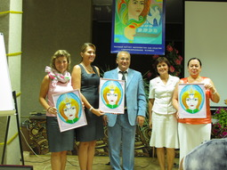

"Седьмой ключ"
Семь лет деятельности
«И увидел я новое небо и новую землю, ибо прежнее небо и
прежняя земля миновали...»
Откр. гл.21
«Седьмой ключ» – семейный центр,
задачами которого являются поддержка и развитие семьи методами Альтернативной психологии.
Благодаря работе по авторской методике профессора Яшара
Ибадова (рег. №6274), осуществляется коррекция семейных отношений, коррекция пространства,
информации на уровне матриц, а также, в процессе ежегодных новогодних сеансов, проводится работа
по коррекции записей во времени.
За семь лет совместной работы нашего центра с Яшаром
Ибадовым и с волгоградским социально-экологическим центром здоровья «Яш-Эль» были получены
определённые результаты: «Седьмой ключ» принимал участие в интерактивных сеансах, научных
конференциях, во встречах МШАП. Рассмотрим эти и другие события более подробно.
-
Рассмотрим некоторые направления деятельности центра и
результаты за семь лет:
- создание центра Альтернативной психологии (АП) в г. Санкт-Петербурге;
- поездка в Волгоград, работа в социально-экологическом центре здоровья «Яш-Эль» 13-16 марта 2011 г;
- встреча сотрудников Международной школы АП в Москве, семинар 16-17 апреля 2011 г;
- экологический проект «Байкал», интерактивный сеанс на Неве, 31.07.11-01.08.11;
- конференция МШАП в Крыму в сентябре 2011 г;
- проведение семинара по АП в ноябре 2011 г в г. Санкт-Петербурге;
- участие в научной конференции в г. Санкт-Петербурге, май 2012 г;
- экологический проект «Каспий», 30.06.12-01.07.12;
- визит в г. Санкт-Петербург делегации из Волгограда в 2012 и 2014 гг;
- участие во Всемирных сеансах коррекции по фазовому портрету «Материнство».
Создание центра и начало деятельности:
19 января 2011 г в г. Санкт-Петербурге
был официально зарегистрирован
филиал школы Альтернативной психологии
ООО «Центр Альтернативной психологии
«Седьмой ключ».
Центр объединил молодых и активных людей,
были созданы сайт, группа Вконтакте.
Активно продвигались методические разработки
и гармонизаторы.
Начальный состав:
Дежурнюк Владимир — директор,
Дежурнюк Мария — руководитель,
Акулова Дарья — специалист
по связям с общественностью,
Наталья Войцешко — специалист
по связям с общественностью,
Потаничева Татьяна — бухгалтер.
Поездка в Волгоградский центр «Яш-Эль» в марте 2011 года: семинар, поездка на озеро лотосов, знакомство с Волгой.
|
Встреча сотрудников Международной школы АП в Москве: |
|
|---|---|
|
семинар 16-17 апреля 2011 г |
Поздравление руководителя «Мославаль-Пси» Славинской Н.С. с днём Рождения |
Экологический проект «Байкал»,
интерактивный сеанс на Неве, 31.07.11-01.08.11.
Первый день, работа около истока Невы — рядом с крепостью Орешек,
недалеко от Ладожского озера.
Второй день, работа около места впадения Невы в Финский залив.
В процессе сеанса проходила коррекция информационных записей воды.
 |
|---|
Крымская конференция в сентябре 2011 г.
Участие принимают все филиалы школы Альтернативной психологии.
Крым. Посёлок Любимовка.
|  | |
|---|---|
|
Проведение сеанса на водопаде Джур-Джур. |
|---|
Проведение семинара по Альтернативной психологии в Санкт-Петербурге в ноябре 2011 г :
уважаемый профессор Я. Ибадов поделился с участниками семинара новыми научными разработками и исследованиями.После семинара проводилась активная работа по сбору научных данных по работе с "Медико-педагого-психологическими тестами". Было собрано около 30 страниц выполненных тестов.
Участие в конференции «Современные биоэнергообменные практики: наука, реальность, применение» в г. Санкт-Петербург, май 2012.
Дежурнюк М.С. провела мастер-класс по работе с
""Медико-педагого-психологическими тестами"" Я.С. Ибадова.
На конференции Мария Сергеевна выступила с докладом на тему:
«Энергоинформационный метод диагностики и лечения». Экологический проект «Каспий», 30.06.12-01.07.12.
Три дня функционировала выставка образцов гармонизаторов и методических
разработок.
Интерактивный сеанс по коррекции информации воды.
- Первый день сеанс проходил на исторической родине семьи Дежурнюк, озеро Безымянное, Красное село.
- Второй день сеанс проходил на берегу Финского залива, на Западной границе города, недалеко от места, где проживает молодое поколение семьи Дежурнюк.
- Сеансы проходили по заранее утверждённой программе, в конце сеанса в воду были опущены семена лотоса, дар Озера Лотосов, г. Волгоград.
- Во время сеанса все участники отметили необычное многомерное состояние времени и особое состояние пространства, ощущение единства участников и гармонии с Миром.
Нулевая точка Санкт-Петербурга
Летом 2012 и 2014 года представители Волгоградского социально-экологического центра
здоровья «Яш-Эль» посетили Санкт-Петербург.
Участие во Всемирном сеансе коррекции по Фазовому портрету
«Материнство»:
В 2012 году делегация посетила обзорную экскурсию по Санкт-Петербургу,
была проведена работа по коррекции информационного плана Александро-Невской лавры, а также
коррекция информации Ладожского озера.
Также проведена энергоинформационная коррекция пространства
жизнедеятельности семьи Дежурнюк и отношений в семье.
Летом 2014 года проведена совместная работа по изучению действия новых
гармонизаторов: часы «Яй-Осидо», очки «Яй-Осидо». Также изучались особенности образного ряда,
который визуализировался во время прослушивания музыкальных произведений в Смольном
соборе.
Проводилась коррекция отношений в семьях пациентов К.Е. и Г.О.
- Коррекция информации на уровне матрицы
- Позитивное восприятие перемен
- Уверенность в завтрашнем дне
- Реализация планов и желаний во времени
|
Дата |
Количество участников |
Регион |
|---|---|---|
|
31.12.12 |
9 основных+9 альтруистов |
Санкт-Петербург, Новокузнецк, Калининград, Филадельфия (США) |
|
31.12.13 |
10 основных |
Санкт-Петербург, Новокузнецк, Калининград, Филадельфия (США) |
|
31.12.14 |
18 основных+3 альтруиста |
Санкт-Петербург, Новокузнецк, Филадельфия (США) |
|
31.12.15 |
10 основных |
Санкт-Петербург, Новокузнецк, Филадельфия (США) |
|
31.12.16 |
10 основных |
Санкт-Петербург, Новокузнецк, Филадельфия (США) |
|
31.12.17 |
10 основных |
Санкт-Петербург, Новокузнецк, Филадельфия (США) |
«А
не есть А, но когда А становится А, оно становится источником всех А»
В.П.
Гоч
Таким образом, получив за семь лет опыт работы и достигнув
результатов в области Альтернативной психологии, мы готовы определить новые направления
деятельности нашего центра. По принципу фрактальности, решив какую-то задачу однажды, мы можем
использовать эти навыки в достижении подобной цели, но более крупного масштаба.
Получив наработки по гармонизации пространства нашей
квартиры и жизнедеятельности семьи, можем проводить эту работу на уровне микрорайона, района,
города (необходима коррекция пространства, исторически-сложившихся записей).
Изменив своё мировоззрение и качество жизни, мы можем
делиться духовным опытом, помогая каждому человеку формировать новый, альтернативный взгляд на
ситуации, отношения, события.
Имея хорошие результаты в воспитании и поддержании здоровья
своих детей, можем оказать помощь в воспитании поколения новых людей: радостных, творческих,
опирающихся на опыт прошлого, но не нагружаемых им.
Пройдя нашей семьёй начальные этапы воцерковления, мы
поможем приобщиться к церкви, ставя акценты на действительно важных принципах и правилах
христианства, помогая понять их истинный смысл, важность и закономерность.
Являясь звеном МШАП, мы в состоянии помогать в открытии
новых центров АП в других городах, делиться умением и знаниями.
Имея практику участия в научных конференциях, будем
продолжать развиваться в этом направлении, представлять наработки Альтернативной психологии
научному сообществу.
Мы рады сотрудничеству с психологами, детскими досуговыми и
учебными организациями, медицинскими учреждениями, научными центрами — со всеми, кто готов
применять новые знания для гармонизации Жизни.
С уважением,
руководители ООО «Центр Альтернативной Психологии «Седьмой
ключ»
в г. Санкт-Петербурге,
Владимир и Мария Дежурнюк.